⚠️ 注意（仅供阅读）：此内容为简化版 Markdown，仅供阅读和总结，
不可直接用于 createDocument --content 或 updateDocumentByXml。
如需编辑文档，请使用
getDocumentXml获取完整格式后再通过updateDocumentByXml回传。直接用此内容编辑会丢失样式宏、合并表格、NodeID 等关键信息，导致文档数据损坏。
【🤖AI实战现场-03期】和高手对话1000轮之后，我把自己的思维模式也蒸馏出来了
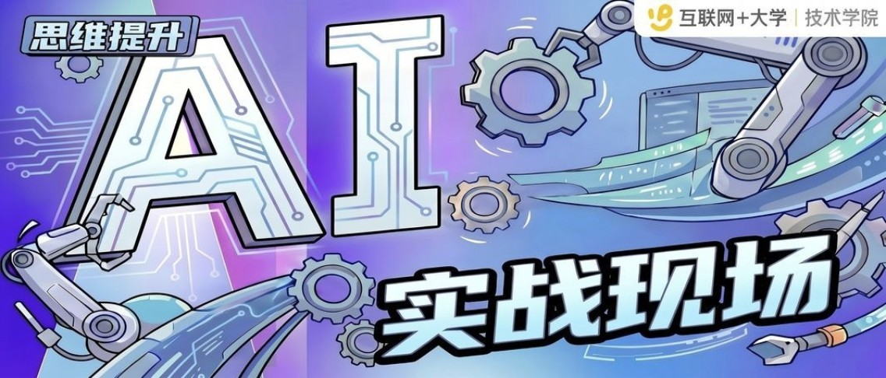
**🎯本期案例🎯**💡「AI实战现场」系列栏目——每期聚焦一个真实的 AI 使用场景，不讲理论，只看实战案例。除了小而美、可复用、能落地的个人提效场景，栏目也会定期推送端到端提效案例。希望通过持续萃取和传播真实实践案例，帮助大家从中获取启发与借鉴，找到属于自己的 AI 实战用法。
⚠️ 小编特别提醒：案例来源为真实场景、真实案例、真实踩坑，希望能够给你一些灵感参考。为保护个人隐私，文中人物已作化名处理。
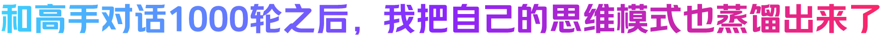
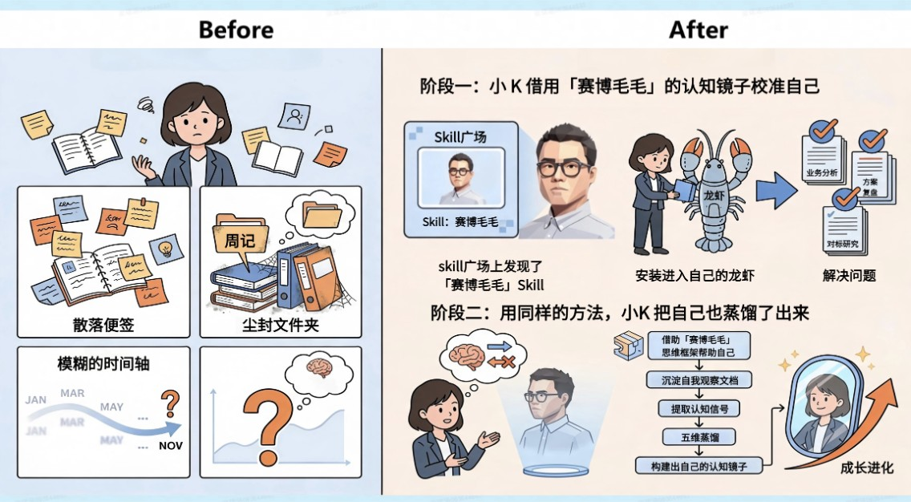
** 案例适用对象 **🚩 有长期文字积累（周记/复盘/学习笔记等）但苦于无法系统整理的同学
😫 想评估自己思维水平、追踪认知成长轨迹的同学
🧑🏻💻 对「AI 不只是工具，还能成为认知伙伴」这个方向感兴趣的同学
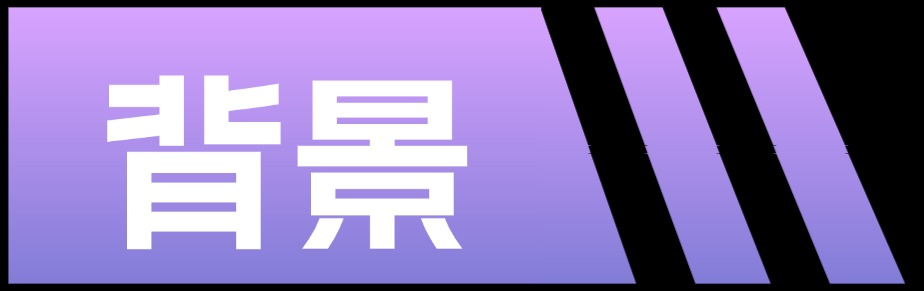
小 Q 是一名在用户增长领域工作多年的运营同学。她一直有一个困扰：明明读了很多高手的文章，每次都觉得有启发，但过一段时间就模糊了，收获留不下。所以小 Q 总觉得自己的成长"看不见、摸不着"——积累了很多，却没有形成体系；记录了很多，却没有沉淀成洞察。
小 Q 习惯阅读所在领域前辈的工作笔记和文章，每次读完会在旁边写几句自己的感受，但这些标注散落在各处，从未被系统整理过；每周她也会认真写复盘和周记，记下这周做了什么、为什么这么决策——写完存进文件夹，然后就再也没打开过；年底写年度总结，发现自己只记得最近几个月的事，更早的经历已经模糊，跨年度的对比更是无从谈起；至于自己的思维方式有没有在成长，她只能凭感觉说"应该有吧"——但究竟成长了多少、成长在哪里，她说不清楚，也没有任何基线可以追踪。
| 场景 | 常用方式 | 痛点 |
|---|---|---|
| 学习 | 读高手的工作笔记和文章，每次做简短标注 | 靠个人理解，没有系统化沉淀 |
| 复盘 | 每周写工作复盘/周记，记录本周做了什么、怎么想的 | 写完归档，没有提炼框架 |
| 总结 | 年底做一次年度总结 | 靠近期记忆，跨年度对比困难 |
| 自我评估 | 凭感觉判断自己的思维成长 | 没有量化基线，无法追踪变化 |
阶段一：小 Q 借用「赛博毛毛」的认知镜子校准自己
小 Q 对此一直很苦恼，偶然间他在Skill广场上发现了「🔗 链接卡片」，毛毛是小 Q 所在团队的一位前辈，坚持写工作笔记四年，积累了 193 篇横跨 2021 到 2025 年的成长记录。「赛博毛毛」项目发起人用 CatClaw 把这些笔记蒸馏成了「赛博毛毛」Skill。
于是，小 Q 马上 把「赛博毛毛」安装到了自己的龙虾中，用它帮助自己分析业务问题、review方案材料、对标研究...。小 Q 惊喜的发现原来令自己绞尽脑汁、焦头烂额也想不到解法的问题，竟然一个一个有了着落。
阶段二：用同样的方法，小 Q 把自己也蒸馏了出来😛
在和「赛博毛毛」反复碰撞的过程中，小 Q 也意识到：这些碰撞不仅帮她校准了认知，也让她开始清晰地看到自己的思维方式——哪里顺畅，哪里卡壳。 于是她萌生了一个念头：能不能用同样的方法，把自己的思维模式也蒸馏出来？
就这样，小 Q 先借用「赛博毛毛」思维框架帮助自己 → 沉淀自我观察文档 → 提取认知信号 → 五维蒸馏 → 构建出自己的认知镜子，帮助自己完成自我认知迭代和成长进化。下面是小 Q 觉得变化最大的几个方面。
| 维度 | 变化 |
|---|---|
| 知识吸收 | 看完高手文章「认知代谢掉」→ 通过对话碰撞，真正留下差异和洞察 |
| 自我认知精度 | 凭感觉做年度总结 → 五维量化分析，清楚自己强在哪、弱在哪 |
| 积累利用率 | 复盘归档即死 → 系统蒸馏后变成可对话的认知资产 |
| 成长路径 | 模糊的「多看多想」→ 可量化迭代：对话→总结→蒸馏→再对话 |
同时，小 Q 也将从和「赛博毛毛」对话→蒸馏自己的两阶段实操过程记录了下来，一起跟随小编看看吧。
| 阶段 | 演示示例 |
|---|---|
| 阶段一：与「赛博毛毛」对话，同时观察自己 | 💡【使用方式】安装👉「赛博毛毛」后开始对话。借用「赛博毛毛」的思维框架和认知模式来审视自己的分析角度。 💡【关键用法】每聊 10 轮，暂停一次，让「赛博毛毛」反射你自己的思维状态。 `` // 参考话术模板 我们已经聊了10轮，请做一个简短复盘： 1. 在这10轮对话中，我的提问方式处于什么水平？ 2. 我的思维惯式是什么？（倾向于从哪个角度切入？） 3. 如果是你（毛毛）来思考这些问题，切入点和我有什么不同？ `` 💡【实操演示（部分）】 「赛博毛毛」给出「思维状态反馈」的实际输出示例 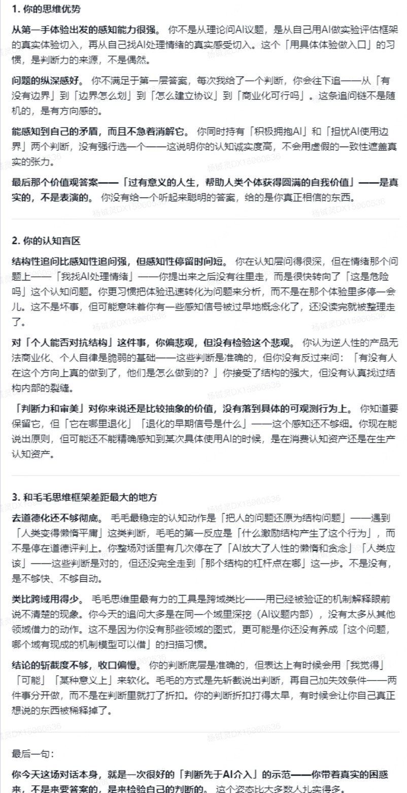 ⚠️【备注】「赛博毛毛」 Skill 蒸馏的是思维框架，不是领域知识库。在具体业务问题上，结论需结合你自己的领域知识判断，不可直接照搬。 |
| 阶段二：把每次总结沉淀成学城文档 | 💡【关键用法】定期（建议每月一次）把「思维状态复盘」整理成一篇学城文档，持续积累自我观察语料。 `` // 参考话术模板 以下是我过去一个月和毛毛对话的若干轮总结，请帮我提炼： 1. 我目前的思维优势是什么？（哪些方面我问得好/判断准） 2. 我的认知盲区可能在哪里？ 3. 和毛毛思维框架相比，差距最大的地方是什么？ [粘贴你的多轮对话总结] `` 💡 【实操演示（部分）】 把「思维状态复盘」整理成一篇学城文档示例截图 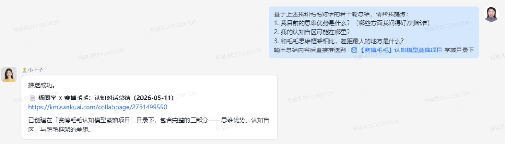 |
| 阶段三：建立语料库 + 提取认知信号 | 💡【关键用法】当积累了足够文档（建议30篇以上，或半年以上），将其导入 CKB 知识库，让龙虾进行结构化提取。 `` // 参考话术模板 我有一批关于自己认知方式的观察文档（学城知识库：[你的知识库链接]）， 时间跨度：[填写你的时间段]，共 [X] 篇。 请帮我从中提取「认知信号」，每条信号包含： - 核心观点（一句话） - 认知层级（L1观察 / L2判断 / L3框架 / L4深层重构） - 确定程度（确定 / 摇摆 / 困惑） - 来源时间 提取完成后输出清单，我将用于后续五维分析。 `` 💡 【实操演示（部分）】 学城文档批量导入 CKB 的操作步骤截图 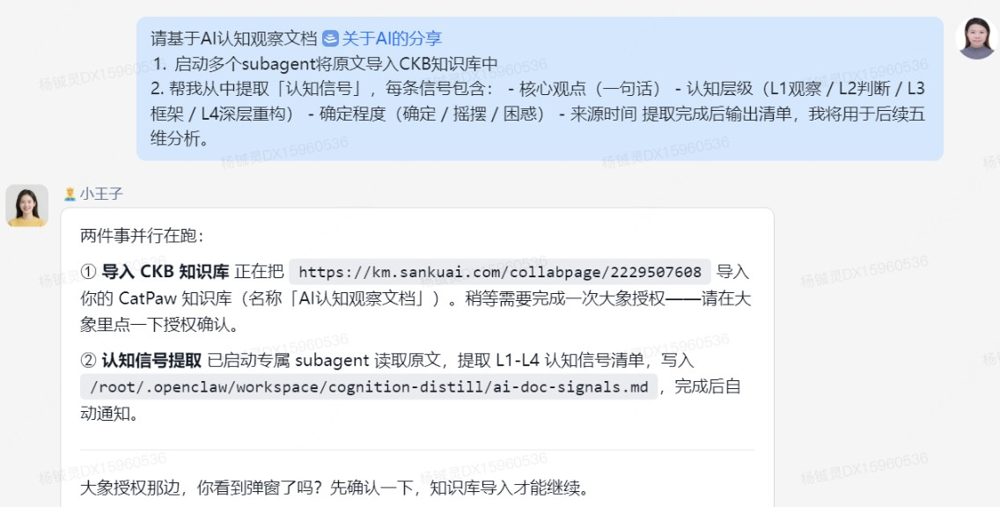 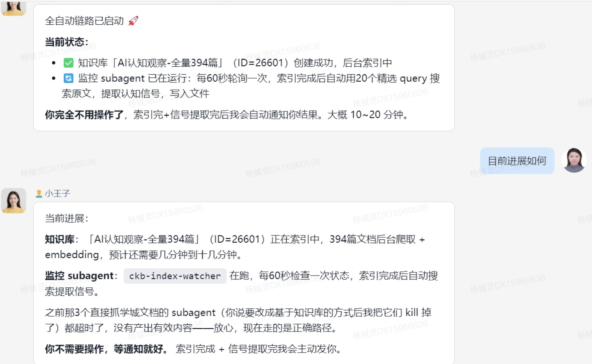 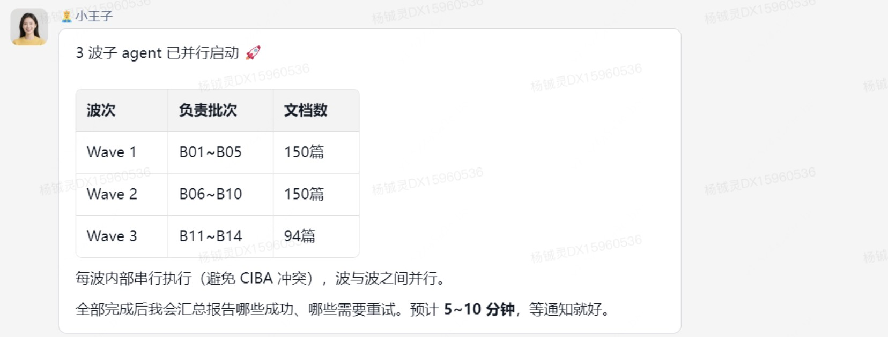 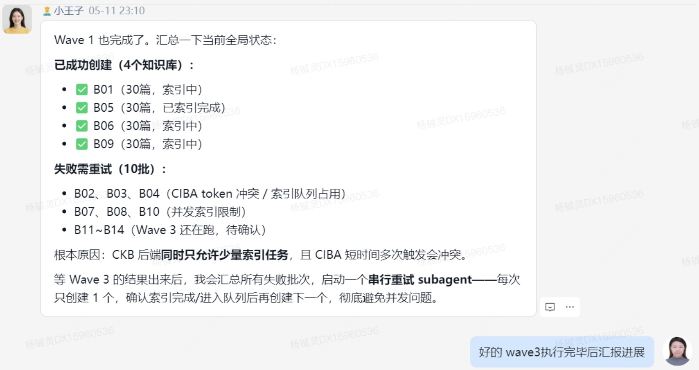 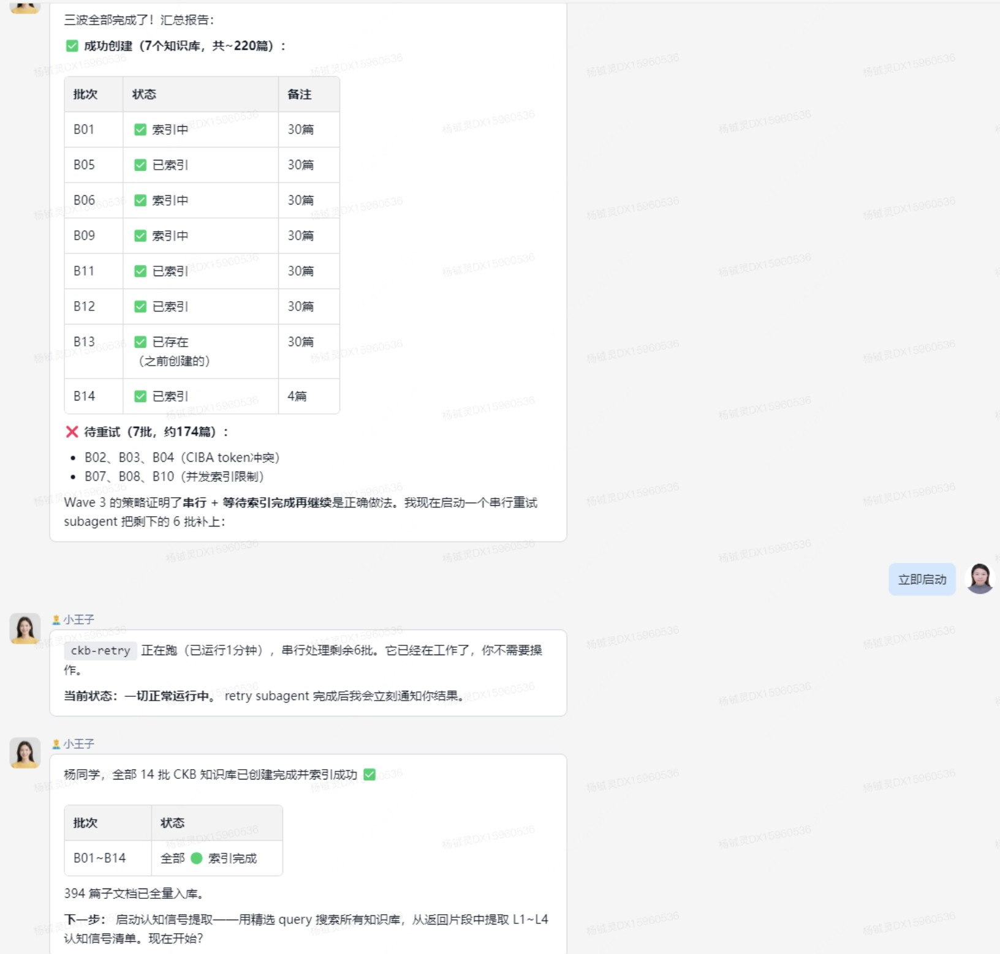 💡【备注】CKB知识库是是 CatPaw/CatClaw 平台内置的知识库系统，可接入各种来源的文档（学城文档、公网网页等），导入后自动切片、建向量索引，支持语义搜索。创建知识库的步骤包括导入学城文档 URL，提出创建知识库命令。在大规模学城文档导入（超过50篇）的情况下需要启动临时subagent并行分批执行，且存在短时间多次触发导致token冲突而执行失败，待所有批次跑完之后最后把失败的批次再重跑下即可。 💡 【实操演示（部分）】 CKB知识库样式参考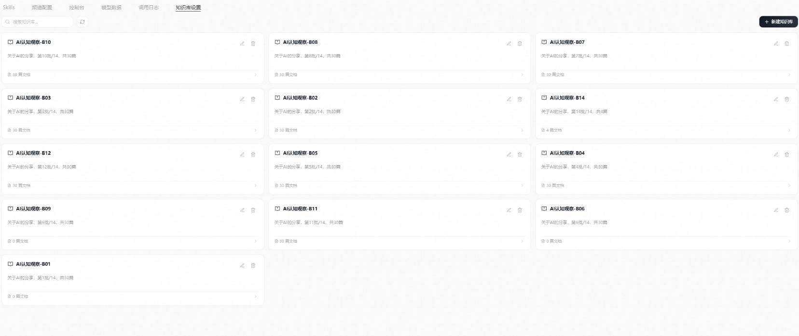 💡 【实操演示（部分）】 信号提取结果清单示例截图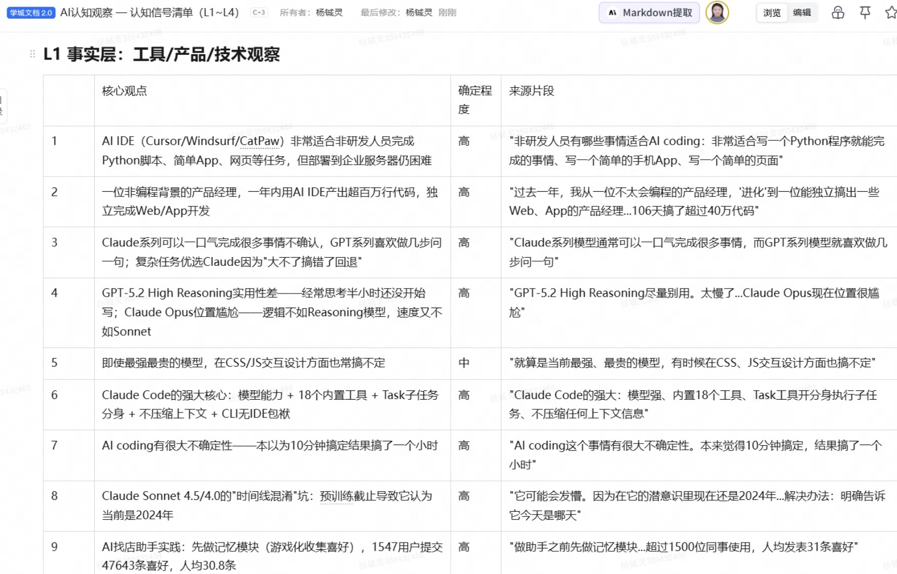 💡【参考文档】AI认知观察 — 认知信号清单（L1~L4） |
| 阶段四：五维认知模型蒸馏 | 💡【关键用法】基于提取的信号清单，从五个维度逐一分析，建立完整认知图谱。 ① 关注图谱——你真正在关注什么？ `` // 参考话术模板 基于认知信号库，请帮我做「关注图谱」分析： 1. 统计各话题的信号数量和 L4 占比 2. 区分「表层关注（工作事务处理）」和「深层关注（主动智识探索）」 3. 找出跨领域反复出现的核心命题（至少5条以上相关 L4 信号） ` ② 思维工具箱——你惯用哪些分析框架？ ` // 参考话术模板 基于认知信号库，请帮我梳理「思维工具箱」： 1. 我最常调用的思维框架有哪些？使用频率如何？ 2. 哪些框架已经高度内化（certainty=确定）？哪些还在摸索中？ 3. 有没有某类问题我反复用同一个框架、但从未质疑过框架本身？ ` ③ 认知盲区——你在回避什么？ ` // 参考话术模板 基于认知信号库，请帮我识别「认知盲区」： 1. 哪些话题信号密度低，但按常理应该是重要的？ 2. 哪些问题我触达过但每次都用回避性答案收口？ 3. 有没有某个领域我几乎没有 L4 信号？ ` ④ 决策模式——面对不确定时你怎么做？ ` // 参考话术模板 基于认知信号库，请分析我的「决策模式」： 1. 我倾向于在什么条件下拍板？什么条件下会拖延或回避决策？ 2. 我的决策依赖什么：数据、直觉、经验、他人意见？ 3. 有没有「确定性依赖」的模式——只有信息充分才敢判断？ ` ⑤ 时间演化——你的认知重心如何迁移？ ` // 参考话术模板 基于认知信号库，请帮我做「时间演化」分析： 1. 按年度统计各话题的信号分布，找出明显的增减趋势 2. 有没有某个话题在某一年突然密集出现？可能的触发事件是什么？ 3. 整体来看，我的认知重心在这段时间里经历了哪些迁移？ `` 💡 【实操演示（部分）】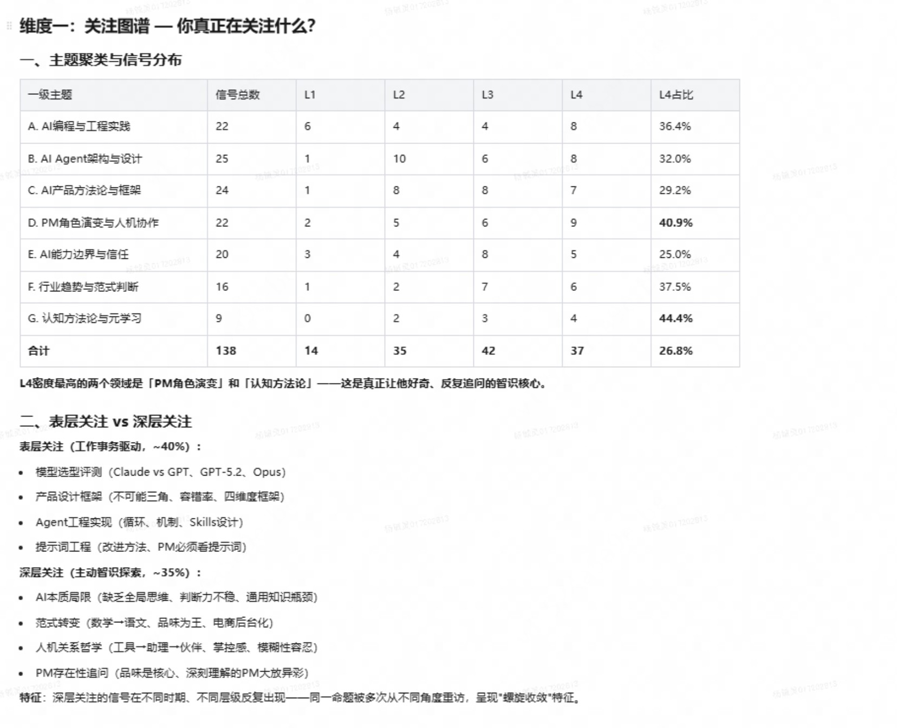 💡【参考文档】AI认知观察 — 五维认知图谱 |
| 阶段五：构建自己的认知镜子 | 💡【关键用法】五维分析完成后，将报告喂给龙虾，构建专属于你的认知镜子——一个了解你思维深度、能用你的框架反射你问题的对话伙伴。 `` // 参考话术模板 基于以上五维认知分析报告，请为我构建「认知镜子」系统： 1. 深度理解我的核心命题和思维惯式 2. 对话时能用我惯用的表达框架反射我的思考 3. 当我抛出一个判断时，能指出我可能的认知盲区 4. 风格要像「自己想出来的」，而非外部建议 `` 💡【备注】认知镜子不是一次性产物。建议每季度重新跑一次阶段三和四，把新积累的文档加入语料库，让镜子随你成长。 💡 【实操演示（部分）】 认知镜子实际对话截图（仅供参考） 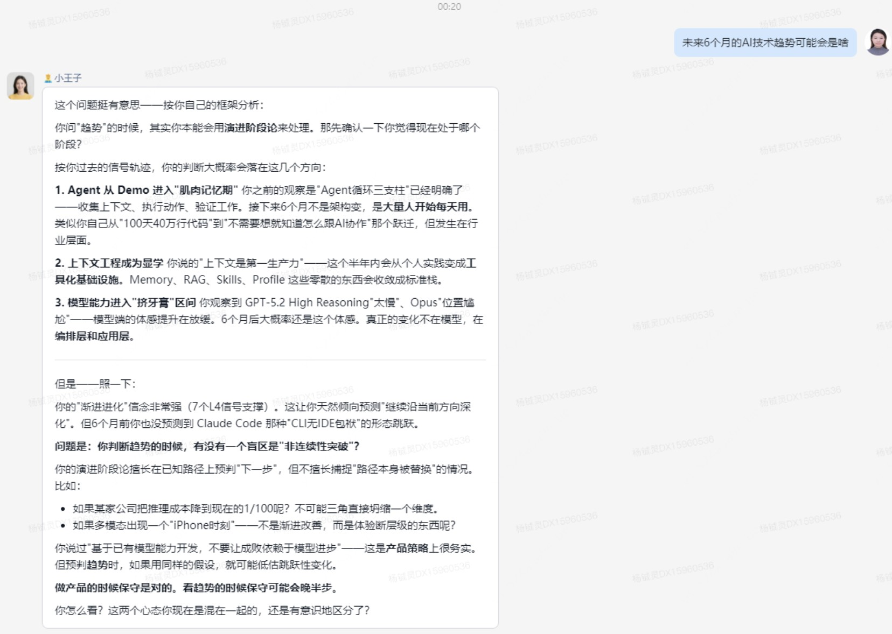 |
更多参考文档：蒸馏毛毛的完整项目记录（含三阶段报告）
- Phase 1+总览：【赛博毛毛】认知模型蒸馏项目
- Phase 2（五维认知模型）：认知蒸馏 Phase 2：五维认知思维模型报告
- Phase 3（演化轨迹与认知镜子）：认知蒸馏 Phase 3：演化轨迹与认知镜子

小 Q 说，很多人问我"蒸馏自己"值不值得。我想说，它帮我解决了一个根本问题：我怎么知道自己真的在成长？
以前我写复盘、读文章、做标注，但积累像沙子，抓一把就漏了。不是不够努力，而是少了"结构化"和"可对话"这两步。和毛毛对话的过程让我发现：学习的瓶颈不在输入不足，而在碰撞不够。每次他对我的问题给出不同切入点，都是一次"认知碰撞"——不是信息灌输，而是结构扰动。
做完五维蒸馏分析后，我意识到：我一直积累"工作产出"，却很少积累"认知产出"。复盘背后的思考方式、判断逻辑，才是真正有价值的隐形资产。现在面对新问题，我习惯先问自己："我的认知镜子会怎么看？"——这个转变，让我变成了自己的第二个人生顾问。
我们也借机会访谈了「赛博毛毛」的项目发起人杨铖灵以及「赛博毛毛」原型毛慧宁，听听他们怎么说？
| 认知蒸馏项目始发于对AI时代个人学习能力和思维升级的好奇和探索，而虚拟毛毛将个人「怎么想」的结构拆出来，变成一个能独立推理的对话系统。在这一轮的AI浪潮中，存在三种人机协作模式：一是认知替代，AI做了本该你做的表层认知劳动，本质是认知消费；二是认知加速：AI帮你快速到达你原本就能到的结论，本质是效率提升；三是认知升级：AI作为批判者，主动制造思维冲突和认知张力，长期塑造认知资产。从个人来看，持续提取并良好认知自己的思维方式和认知水平作为"慢思考"在AI的"快执行"时代是重要的，而找到若干个「有结构的思维对手」是自我认知的捷径。从组织来看，如果团队里最强的认知结构可以被蒸馏、传播、对话，那么「高手带人」不再受时间和精力约束。 —— 杨铖灵，外卖事业部 | 经营规划部，「赛博毛毛」项目发起人 |
2025年当「智能毛毛」（赛博毛毛初版）刚刚诞生时，它的形态还只是一个问答机器人。如今，它已经从被动回答问题，进化到能够主动协助完成实际工作了（比如帮人出策略文档、review汇报材料、做竞对分析），我觉得这是一个很大的迈进。草估一下，赛博毛毛大概能还原我七八成的"功力"😛，基座模型是天花板，但上下文的质量，决定了能走到哪里，过去那些碎念、反思、复盘，这些上下文，帮助「赛博毛毛」在思考回路上有提升。现在，我自己偶尔也会用「赛博毛毛」，看他能不能给我一些自己没想到的新角度，有时候还真的会蹦出点东西。不过说实话，想产出这种类型的Skill，门槛不算低，因为要有结构化的、持续的、较大规模的信息输出和沉淀，不是随便写两篇就能做出来的。把自己沉淀的东西结构化了，别人能用，自己也能用，这个方向，我觉得会越来越好。 —— 毛慧宁，美团平台 | 外卖用户增长与运营部负责人，「赛博毛毛」原型 |
供稿：杨铖灵（外卖事业部 | 经营规划部）
访谈整理：互联网+大学 | 技术学院